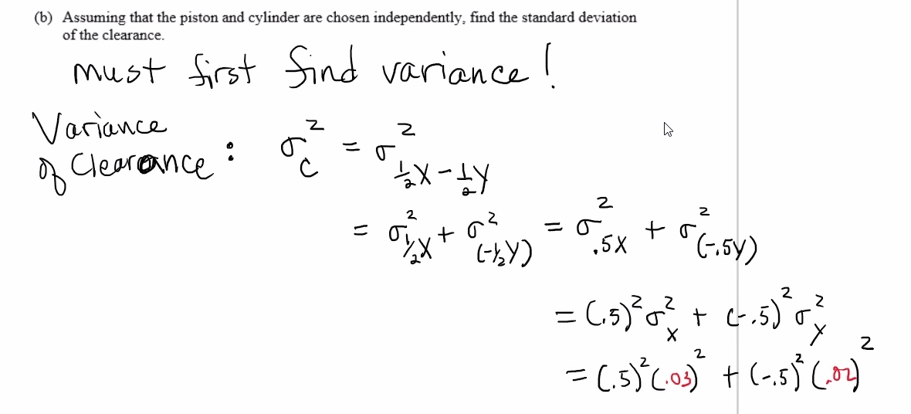
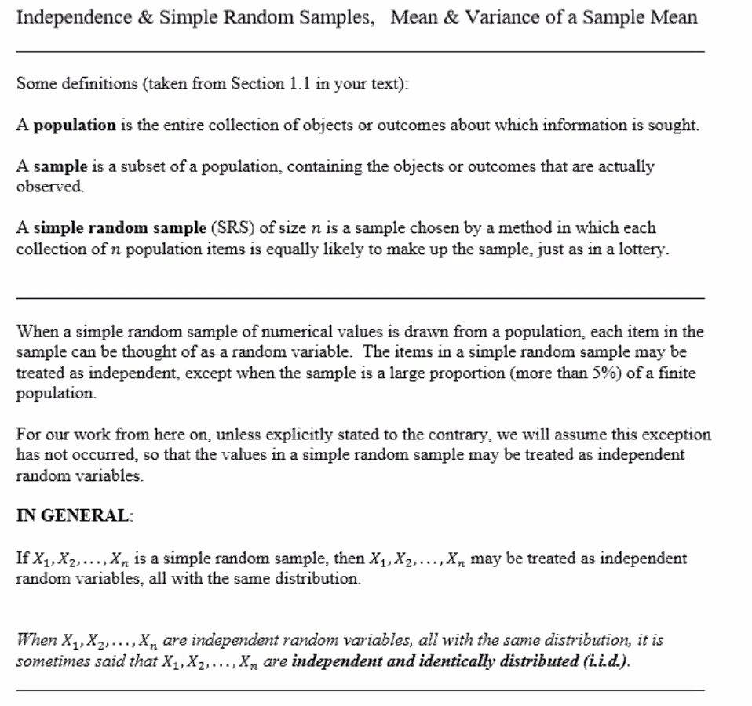
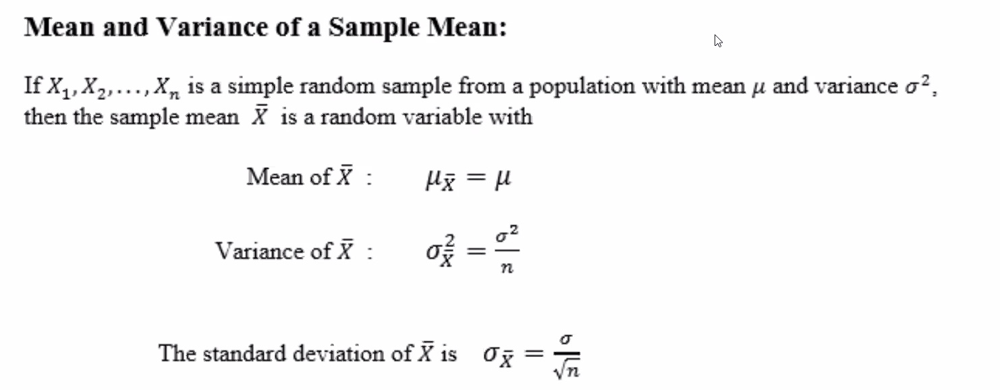
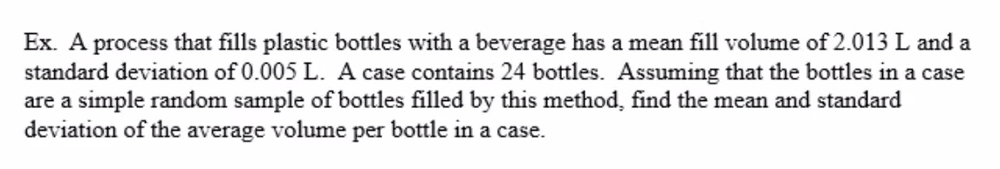

2.5 cont
From the previous e.g.:


Standard deviation of the clearance:
Mean and variance of a sample mean <- HERE
Stat50 2.5 Mean & Variance of a Sample Mean.pdf

Items in a sample are independent if knowing the values of some items does not help predict the values of the others.
A "pretend" example:
Define a population as: all students at sac state.
Define
Consider a simple random sample of size 5. Let:
be a simple random sample. For

A sample mean is an arithmetic average.
So considering our last example, with our sample size of 5:
So the sample mean can be computed:
The value of

The mean of all possible sample means is the same as population mean.
e.g.

| Population | Population variable | Mean | Standard deviation | Sample size |
|---|---|---|---|---|
| All of the bottles filled by this process |
Let
Average volume per bottle of a case of 24 bottles is the sample mean:
Mean of the average volume per bottle in a case:
The standard deviation: